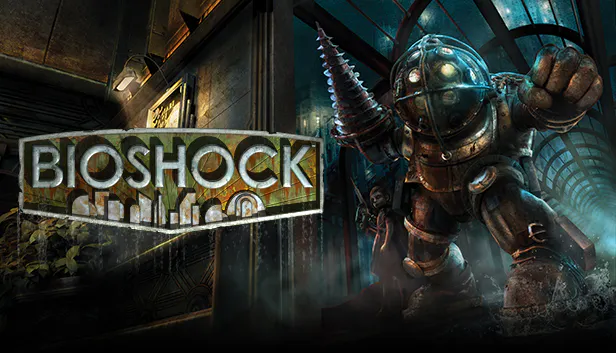

Dead riseing 2

Dead Rising 2 is one of my favorite video games of all time this to me was when Dead rising as a series was at its peak. Before it would go down hill starting with Dead rising 3 and then Dead rising 4 would finally kill the series. The synopsis
is, years after the first games zombie outbreak. You play as chuck Greene a former motor cross biker who’s taking part in a game show about killing zombies called terror is reality to earn money for a drug for his infect daughter Katie. After the show a another zombie outbreak happens and you get framed for it and are trying to clear your name and get out alive. The combat of the game is fun and Fluid and the combo weapons were so fun to use and the combo weapons were pretty realist un like dead riseing 3 and 4. so if you haven't played this game yet play it you won't regret it.
Persona 4
persona 4 is a fantastic game and i think is a decent game to enter the francise. this game is how i got into the serius
- game play:it's a dungeon crawler with pokemon like elements
- there are also some life simulator elements elements
Summary
The story is about yu the protagonist has to transfer schools and moves to Inaba to live with his uncle Dojima and his cousin Nanko. Then once you get there people start getting murdered. you and your gang of friends have figure out who’s doing it and why.
I think everyone should play this game at least once. Personal story this game has a close place to my heart because this game on my vita was my only comfort when I was in a dark place in my life and that’s why I can’t recommend it enough.
Resident evil 7

Over View
Resident evil 7 is one of my favorite horror games. Capcom decided to take a different approach with this title. Instead of a third person perspective like resident evil 4/5/6 they went with a first-person perspective. So you play as Ethan Winters trying to find out what happed to his wife Mia when she didn’t come back from her baby siting job for the baker family. Ethan will soon find out the baker family isn’t what he thought and things are what they seem.Gameplay
the gameplay is in first person as you explore the Baker home while the differant family members stalk you
you do get a varity of weapons but only so much ammo but you can craft weapons and healing items
this game is Genuinely scary and not just a bunch of jump scares like other games of the genre.
final thoughts
it's a fantastic game and it single handedlybrought resident evil back after capcom was trying to jump on the call of duty bandwagon with resident evil 5 and 6 and 6 flopped the hardest.so if you haven’t played this amazing game go out and play it trust me it’s worth you time.
Bioshock

Over View
Bioshock what a game,What can I really say about it to do it justice. Bioshock came out in 2007 you play as a man named jack who’s plane crashes then you are thrust into the under water city that’s not what it seems
gmaeplay
The game play is like a old school shoot where you shoot what’s in front of you. There is also a rpg elements to this game because you also get powers along side your guns and can get small power ups that make your character be able to take more damage go invisible by standing still and much much more. It’s fun but the controls definitely feel clunky at time.
Highlights
I love how this game makes you wonder as you move through the city
And a story is told through audio logs that you can play in the background while you explore the ruined underwater city of rapture. The audio logs tell many stories of the residents of rapture and explains what happed and the down fall and why the residents are so hostile and wracked out .
final thoughts
I think this game is a work of pure art to from the The level design to the plot the plot twist, not too many games has had the effect BioShock had on me.
What I mean is I thought about this game long after I beat it. I belive every true gamer need to play this game at least once.
Elder scrols 4 oblivion
overview
Oblivion Is what got me into Bethesda games when I was a teenager.in this game you start as a prisoner witch is now recurring theme in the elder scrolls series. Then the emperor comes and opens a secret path in your cell. Then the emperor a little bit later dies and starts to send you on the main quest.
But if you have ever played a Bethesda game you know most people forget that the main quest is a thing and know the side quests are where it’s at.
hight lights
The quest design is one of the best of the series. the npcs were prettie advanced for the time i know doesn't hold up so much now.
Gameplay
the gameplay is very dull and tedious by todays standard but the magic system is what was really fun for me.
Especialy when you start creating your own spells and enchanting the armor. the enviroment is very dull for todays
standards and of course like all bathesda games this game has a lot of bugs and not just the funny ones either.
Final Thoughts
I think this game is good and a look at bathesda's history that i will always cheerish its a part of my childhood
and i think everyone should play this game at least once just to see how far bathesda has come.